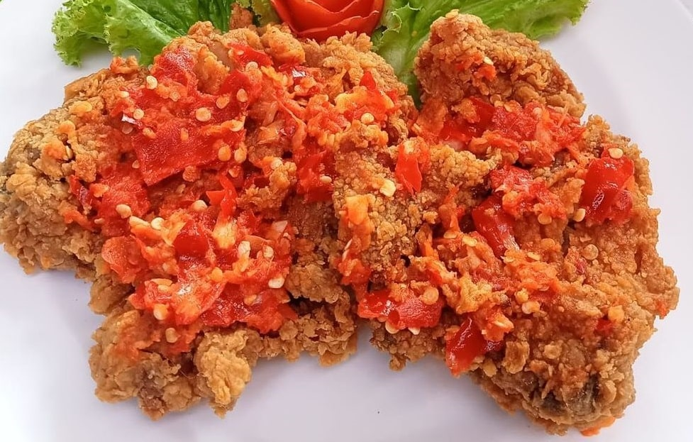

Laman ini dibuat sebagai media pemasaran online UMKM di wilayah Sumberrejo, agar produk UMKM setempat dapat dikenal lebih luas.
© KKN Tempel 2022.
Penulis >> Admin
Bagi sebagian orang, makan hasil masakan sendiri itu lebih merasa memuaskan apalagi jika masakannya itu mirip dengan produk yang laris. Artinya hasil masakannya sudah sangat enak.
Di sisi lain mungkin Anda terbesit untuk membuat produk UMKM berupa kulineran dan menginginkan menu utamanya ayam geprek karena banyak disukai.
Pertanyaannya, apakah Anda sudah mengetahui resep ayam geprek yang enak?
Belum? Oke, berarti Anda sedang berada di tempat yang tepat, berikut ini ada resep ayam geprek dari Mba Diah Pramudita yang sudah pernah dipost di Cookpad. Yuk simak sama-sama.
Untuk 2 porsi
2 potong ayam (bagian paha dan dada ayam).
1 butir telur.
5 sendok tepung terigu.
3 sendok tepung maizena.
3 siung bawang putih.
Merica secukupnya.
Garam secukupnya.
Minyak goreng secukupnya.
1 batang daun kemangi.
Sambel
22 buah cabe rawit.
2 siung bawang putih, digoreng.
Garam secukupnya.
Masukkan ayam. Tambahkan bawang putih halus, merica, dan garam. (Bisa menambahkan bumbu penyedap jika Anda sukai).
Remas-remas ayam, sampai bumbu tercampur rata dan teresap. Tinggalkan selama kurang lebih 2 jam (semakin lama semakin baik, agar bumbu meresap pada ayam).
Setelah Anda merasa bumbu telah meresap, masukkan 1 butir telur. Kocok hingga semua permukaan ayam terlumuri telur.
Siapkan tepung terigu dan tepung maizena, campurkan. Lalu masukkan ayam yang telah dilumuri telur kedalam tepung. Pastikan semua permukaan ayam tertutupi tepung ya.
Setelah minyak goreng panas, masukkan ayam. Goreng ayam dengan api kecil agar ayam matang sampai didalamnya. Goreng sampai berubah warna menjadi kuning keemasan lalu balik perlahan.
Tunggu sampai kedua sisi ayam matang dan berubah menjadi kuning keemasan. Lalu tiriskan.
Sambal:
Masukkan bawang putih yang telah di goreng, cabe, garam. Ulek sampai halus. Tambahkan 2 sendok minyak goreng panas bekas menggoreng ayam.
Geprek ayam pada sambel. Berikan daun kemangi jika Anda suka. Ayam geprek pedas siap disantap!
Jika ingin mengikuti makanan kekinian, bisa ditambahin keju parut atau lelehan keju mozarella ya.
Nah, itulah resep membuat ayam geprek pedas yang dijamin enak. Semoga Anda berhasil membuat ayam geprek yang enak dan disukai oleh keluarga ya.
Laman ini dibuat sebagai media pemasaran online UMKM di wilayah Sumberrejo, agar produk UMKM setempat dapat dikenal lebih luas.
© KKN Tempel 2022.